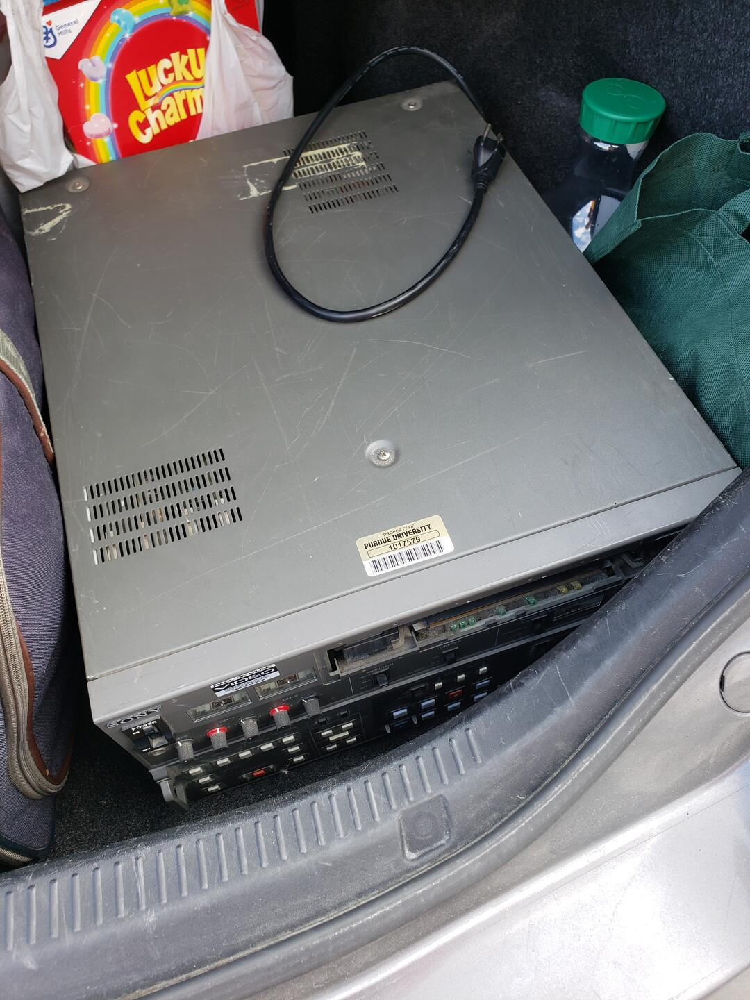
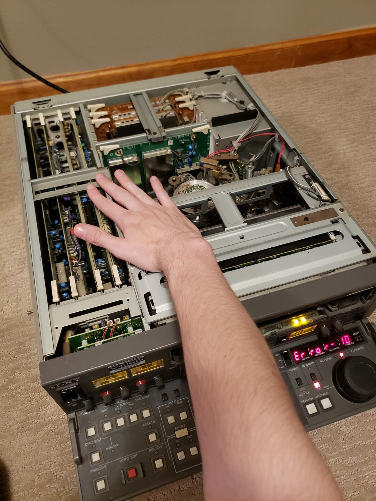
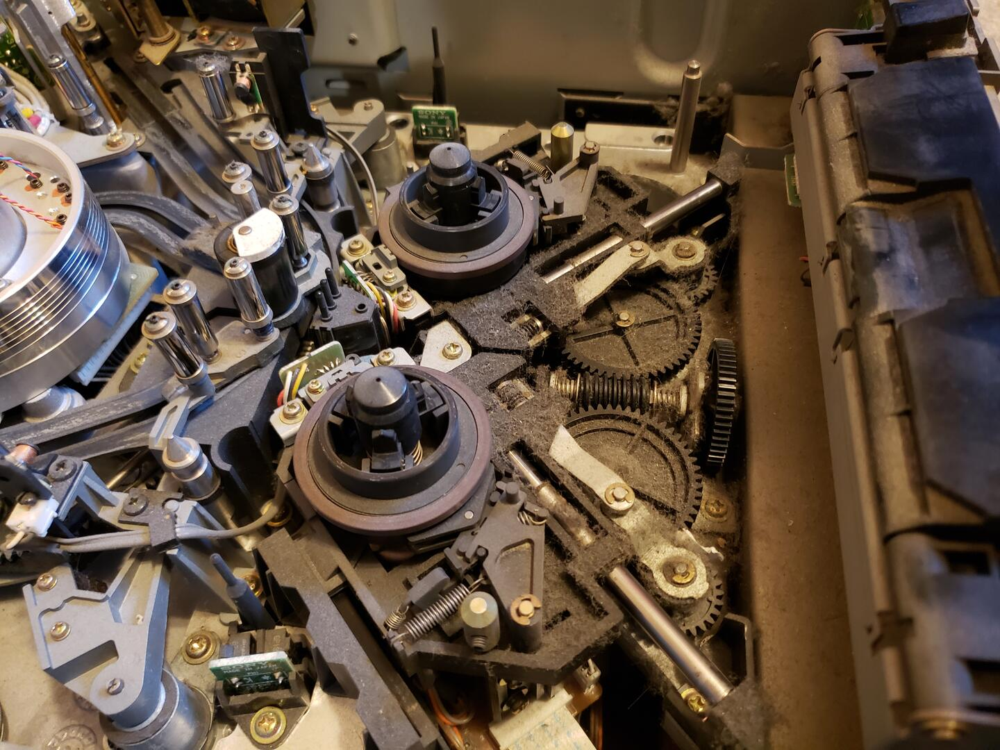

Linear Editing
Over spring break, I went to Chicago. On the way back, I decided to stop at [RIVAL UNIVERSITY] to see some friends. While I was there, I realized that they had a surplus equipment warehouse that I could visit. We decided to check it out, showing up 20 minutes before they closed.
When we got there, I went straight to the back and worked my way forward. Almost immediately I hit what I would describe to be the "jackpot". A Sony BVW-2800 Betacam SP recorder? For $25? What a deal!

It was in rough state, but that was simply too good a deal to pass up. While I was standing there gawking, an employee came up and said "If you're interested in this, we can do 50% off of the price. It's being sold for-parts, so it's gonna get scrapped if nobody buys it". Well shoot, now I had to buy it.
Part 1: Does this mystery box actually work?
Once I got back to my apartment, I could test it. It was in kinda rough visual appearance, but appeared to work. I powered it on, and it spun to life with the characteristic professional equipment fan noise (Noctua swap in the future?). I inserted a tape, and... not a lot happened. It grabbed it, took it inside, waited, then spat it out with an Error 21. Hmm. Let's take a peek inside.
Part 2: Error 21?
Once I took the lid off, I knew I was looking at a serious bit of kit.

Yeah, it's a bit complicated. And don't worry about that Error 10, that just means that the moisture sensor detected moisture, which only happened because I dragged it in from my cool car to my warm room. It went away quickly enough. Back to the Error 21 though, I looked up the service manual, which listed it as a fault with the REEL TABLE ASS'Y. Betacam has two different sizes of cartridge, so I guessed that the issue was with the mechanism that moved the reel spindles into position. Opening it up and yep, these rails certainly look gummed up with oil.

I took out the metal rails, cleaned them with isopropyl alcohol, gave them a dab of 3-in-1 oil, and put them back in. On the next powerup, I put the tape in, and it fed properly! I hit play, and was greeted with the glorious footage that I had recorded onto it.
Part 3: Next Steps
What can I do with this now? At the moment, not a whole lot. I ordered the proper adapters and cables to connect it to all of my other equipment, but that only gets me so far. Really what I need is another recorder. Yep, one alone is actually pretty useless, if you're trying to do proper linear editing. I'd love to find another PVW-2800, or even a PVW-2600. I'd also love to purchase a Sony RM-450 editing controller, and maybe down the line some Sony PVMs to monitor the output properly. That'd be a long way away though. For now, I'll just use the deck to get a high-quality component and S-video output from the tapes I've recorded, digitize them, and then edit them in Vegas Pro like usual. Kinda lame, I know, but it is what it is. I can't find another recorder that doesn't have insane shipping prices, so I'll just have to hope lightning strikes twice. I do technically have two betacam players now though, so I can hook them up and do some very basic assemble editing. We'll just have to wait and see!